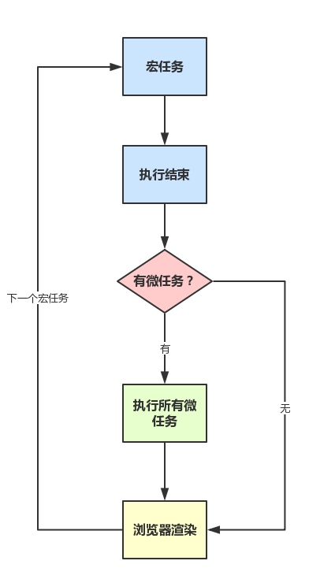

JavaScript 的事件循环
宏任务
(macro)task ： 每次执行栈执行的代码都是一个宏任务（包括每次从事件队列中获取一个事件回调并都放在执行栈中执行）
(macro)task->渲染->(macro)task->...
(macro)task： script(整体代码)、setTimeout、setInterval、I/O、UI交互事件、postMessage、MessageChannel、setImmediate(Node.js 环境)
微任务
microtask（又称为微任务），可以理解是在当前 task 执行结束后立即执行的任务。也就是说，在当前task任务后，下一个task之前，在渲染之前。
所以它的响应速度相比setTimeout（setTimeout是task）会更快，因为无需等渲染。也就是说，在某一个macrotask执行完后，就会将在它执行期间产生的所有microtask都执行完毕（在渲染前）。
microtask：Promise.then、MutaionObserver、process.nextTick(Node.js 环境)
运行机制

Promise和async中的立即执行
Promise 中的代码当做同步任务立即执行。
async/await中，出现在 await之前的代码立即执行。await 之后的相当于 promise then。
await 做了什么
await 让出线程的标志。await 后面的表达式会执行一遍，将await 后面的代码加入到microtask 中，然后await 后面的表达式执行完，就会跳出整个async 函数来执行后面的代码
async await 本身就是promise+generator的语法糖